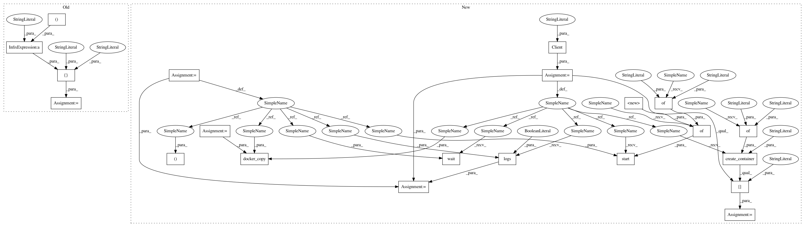

dd4ebd98a0026f626242f30cf9688d61b4798af1,mltsp/run_in_docker_container.py,,predict_in_docker_container,#Any#Any#Any#Any#Any#Any#Any#Any#Any#Any#,254
Before Change
"\n\ndocker container stderr:\n\n", str(stderr), "\n\n")
// copy all necessary files produced in docker container to host
cmd = [
"docker", "cp",
(
"%s:/tmp/%s_pred_results.pkl" %
(container_name, prediction_entry_key)),
"/tmp"]
status_code = call(cmd, stdout=PIPE, stderr=PIPE)
print("/tmp/%s_pred_results.pkl" % prediction_entry_key,
"copied to host machine - status code %s" % str(status_code))
with open("/tmp/%s_pred_results.pkl" % prediction_entry_key, "rb") as f:
pred_results_dict = pickle.load(f)
After Change
pickle.dump(arguments, f, protocol=2)
try:
// Instantiate Docker client
client = Client(base_url="unix://var/run/docker.sock")
// Create container
cont_id = container_name = client.create_container(
"mltsp/predict",
volumes={"/home/mltsp": ""})["Id"]
print(cont_id)
// Start container
client.start(cont_id,
binds={cfg.PROJECT_PATH: {"bind": "/home/mltsp"}})
// Wait for process to complete
client.wait(cont_id)
stdouterr = client.logs(container=cont_id, stdout=True, stderr=True)
print("\n\ndocker container stdout/err:\n\n", str(stdouterr), "\n\n")
// copy all necessary files produced in docker container to host
path = "/tmp/%s_pred_results.pkl" % prediction_entry_key
docker_copy(client, cont_id, path, target="/tmp")
print("/tmp/%s_pred_results.pkl" % prediction_entry_key,
"copied to host machine")
with open("/tmp/%s_pred_results.pkl" % prediction_entry_key, "rb") as f:
pred_results_dict = pickle.load(f)
In pattern: SUPERPATTERN
Frequency: 3
Non-data size: 21
Instances
Project Name: cesium-ml/cesium
Commit Name: dd4ebd98a0026f626242f30cf9688d61b4798af1
Time: 2015-02-27
Author: a.crellinquick@gmail.com
File Name: mltsp/run_in_docker_container.py
Class Name:
Method Name: predict_in_docker_container
Project Name: cesium-ml/cesium
Commit Name: 5d6747f7a58c6cd088b70adbecfce05e9b8ca4f3
Time: 2015-02-24
Author: a.crellinquick@gmail.com
File Name: mltsp/run_in_docker_container.py
Class Name:
Method Name: featurize_in_docker_container
Project Name: cesium-ml/cesium
Commit Name: ef24b500a80a7536beedcc63529a1999101a4ac4
Time: 2015-02-27
Author: a.crellinquick@gmail.com
File Name: mltsp/run_in_docker_container.py
Class Name:
Method Name: build_model_in_docker_container